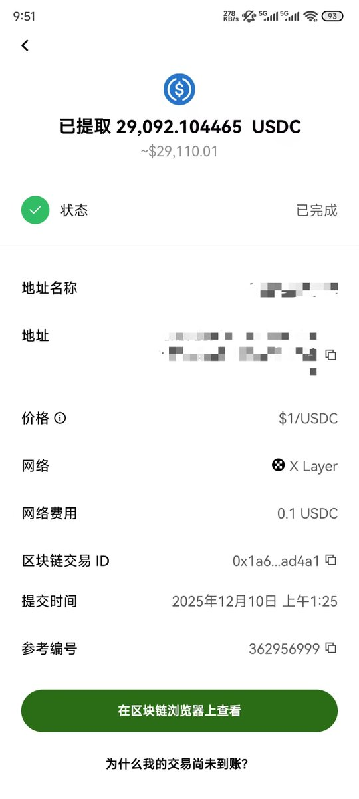
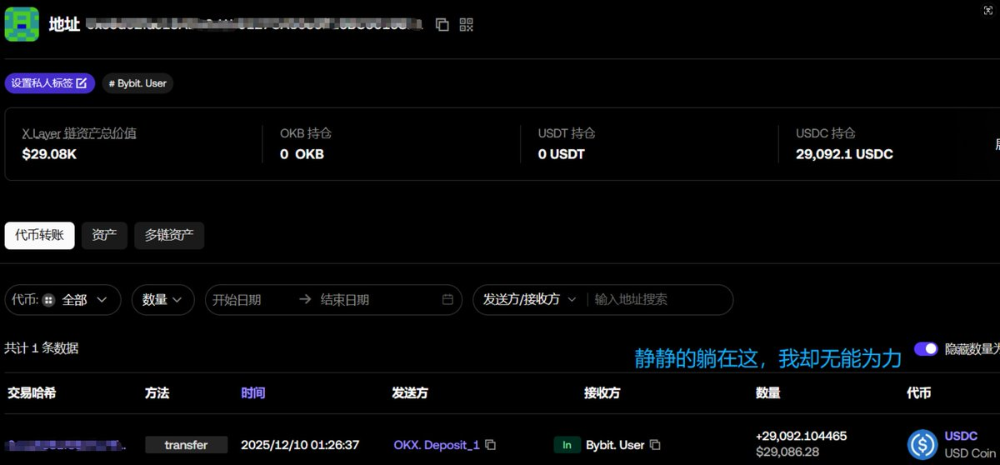

寒涟漪
@HANLIANYI331
相比起传统资金，在中国，虽然个人持有加密货币不违法，但是同时也不受法律保护，丢失后追回极难
一旦持有加密货币，都需要谨慎再谨慎，否则任何时刻都会有钱财全部灭失的风险


不卷去上链
@Ethan_Flat
恳请Bybit救我一命。
一个失误导致近3万枚USDC从@OKX 通过X Layer链充值到Bybit的交易所地址，Bybit不支持X Layer链。酿成大祸。恳请Bybit救救我。
入圈一年，新手散户，什么也不懂。只老老实实做低风险理财，把钱像乞丐一样分散在不同的交易所@Bybit_ZH，@binancezh，@Gate_zh， https://t.co/LsZRGgVNZt